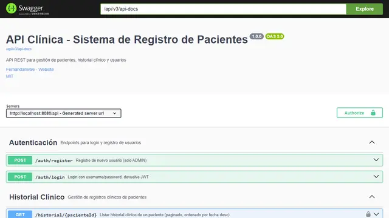

JAVA · API REST
Clínica: registro de pacientes
- El problema
- Llevar pacientes e historial clínico en planillas expone datos sensibles y no controla quién puede ver o modificar cada registro.
- La solución
- Una API REST con autenticación, tres roles (admin, médico y recepción) y validación del RUT chileno: recepción registra pacientes, los médicos escriben el historial y solo admin gestiona usuarios.
Stack:
- Java 21
- Spring Boot
- PostgreSQL
- Docker
Cómo lo construí
Cómo usé cada tecnología
- Spring Boot 3
- Estructura en capas (controller → service → repository), DTOs y un manejador global de errores con respuestas consistentes.
- Spring Security + JWT
- El login entrega un token y cada endpoint exige un rol con
@PreAuthorize; las contraseñas se guardan con BCrypt. - PostgreSQL + Flyway
- El esquema vive en migraciones versionadas (tablas, índices y datos de desarrollo), así la base se recrea igual en cualquier entorno.
- Spring Data JPA
- Búsqueda paginada de pacientes por RUT, nombre o email sin escribir SQL a mano.
- Docker Compose
- Levanta API y PostgreSQL con un comando; imagen multi-stage con usuario no-root, y Compose se detiene si falta un secreto.
- JUnit 5 + Mockito
- 22 tests: validador de RUT, servicio de pacientes y un test de regresión de seguridad.
- SpringDoc OpenAPI
- Swagger UI para documentar y probar cada endpoint.
Decisiones y seguridad
- Detecté que el registro de usuarios era público y permitía crearse una cuenta ADMIN: ahora solo un admin puede registrar usuarios, con un test que lo comprueba.
- Sin credenciales ni JWT secret por defecto: todo se lee de variables de entorno (
.env.example). - El admin inicial se crea desde una variable de entorno y su contraseña ya no se imprime en los logs.
CI con mvn verify, build de Docker y CodeQL.